1. 핵심 맥락:
2. 최근 변화/스파이크:
3. 실무 인사이트:
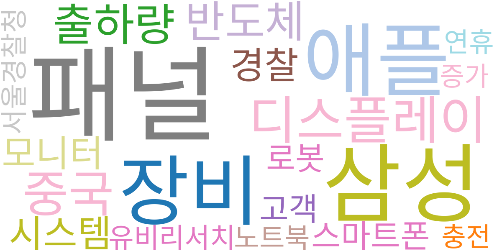
| Rank | Keyword | Score |
|---|---|---|
| 1 | 패널 | 0.931 |
| 2 | 삼성 | 0.609 |
| 3 | 애플 | 0.524 |
| 4 | 장비 | 0.482 |
| 5 | 디스플레이 | 0.466 |
| 6 | 중국 | 0.428 |
| 7 | 출하량 | 0.336 |
| 8 | 반도체 | 0.324 |
| 9 | 시스템 | 0.316 |
| 10 | 경찰 | 0.316 |
| 11 | 모니터 | 0.307 |
| 12 | 스마트폰 | 0.304 |
| 13 | 고객 | 0.293 |
| 14 | 로봇 | 0.291 |
| 15 | 유비리서치 | 0.282 |
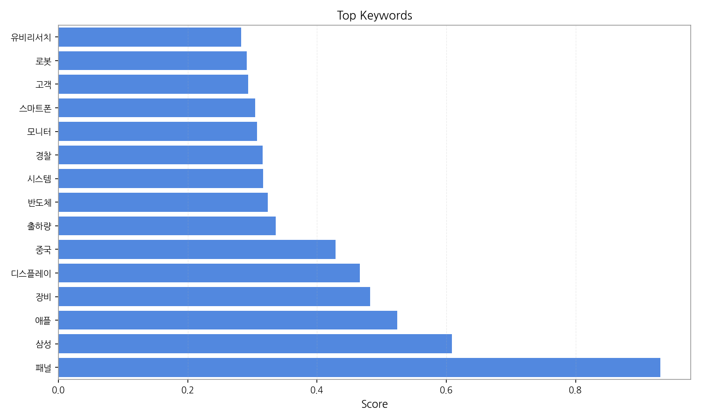
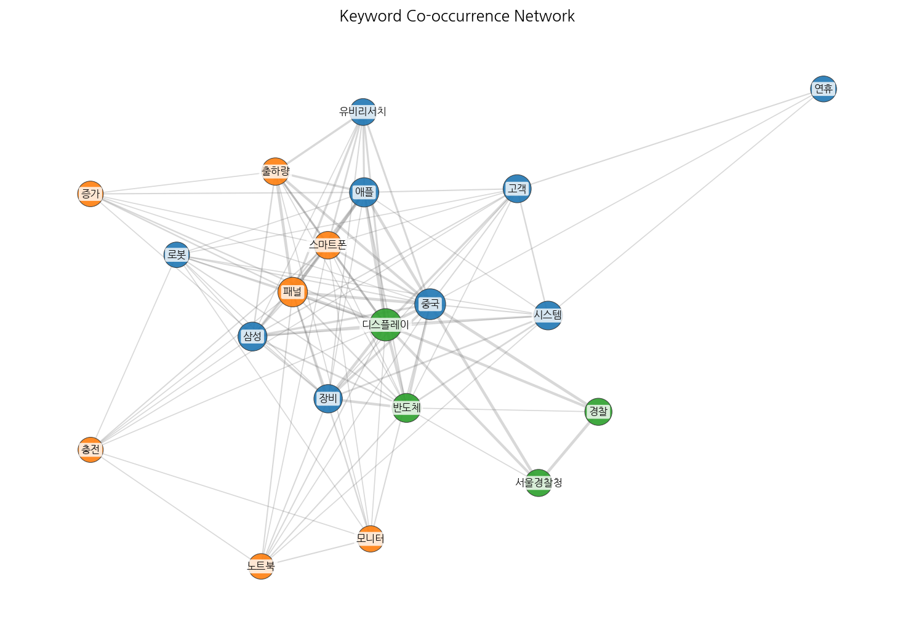
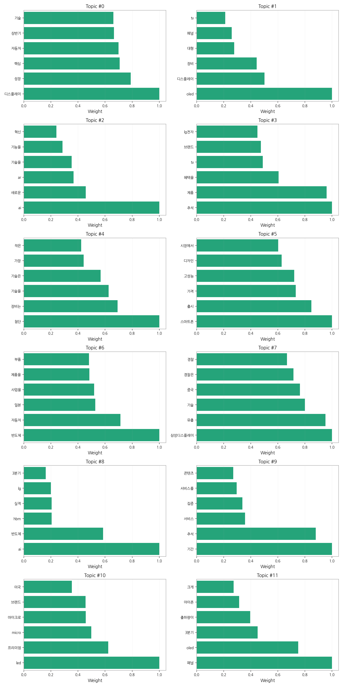
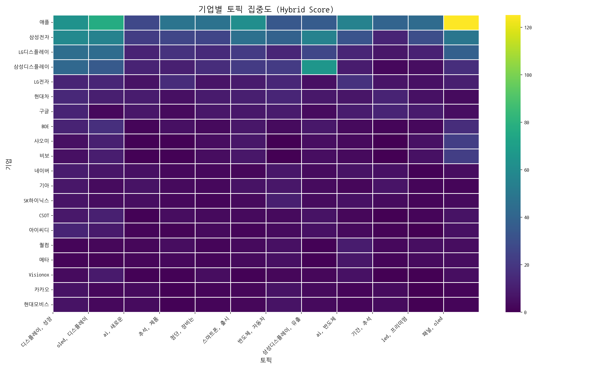
전체 기업과 토픽 간의 관계를 한눈에 보여줍니다. 색이 진할수록 연관성이 높습니다.
가장 뜨거운 주제를 두고 어떤 기업들이 경쟁하는지 점유율을 보여줍니다.
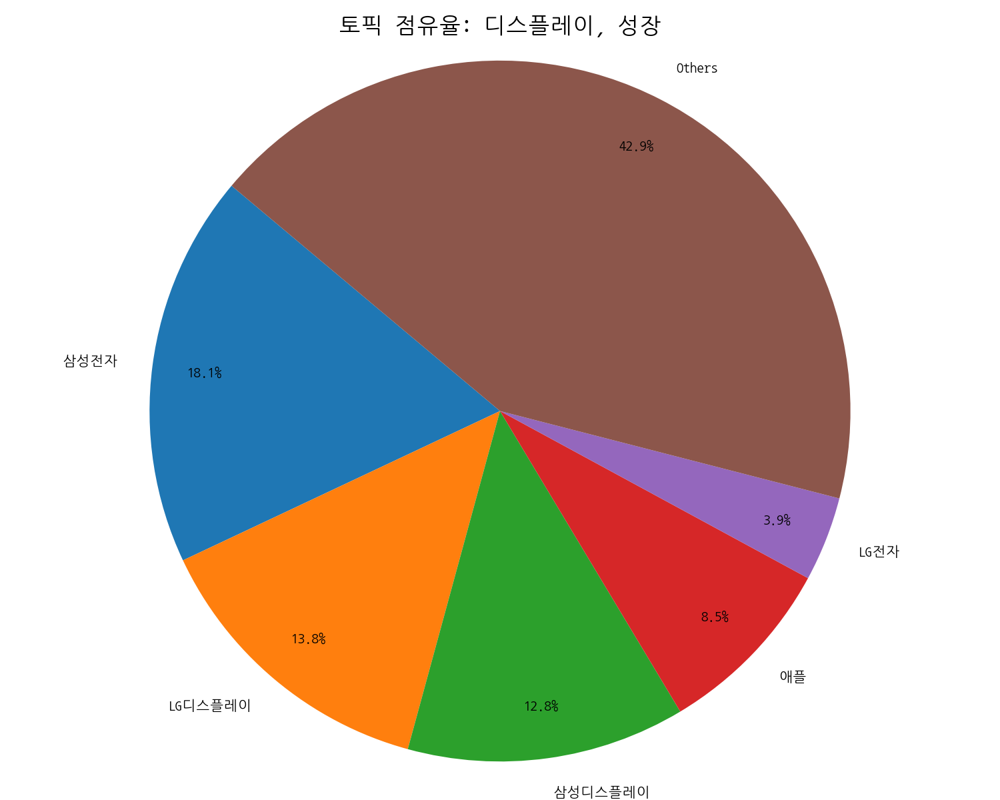 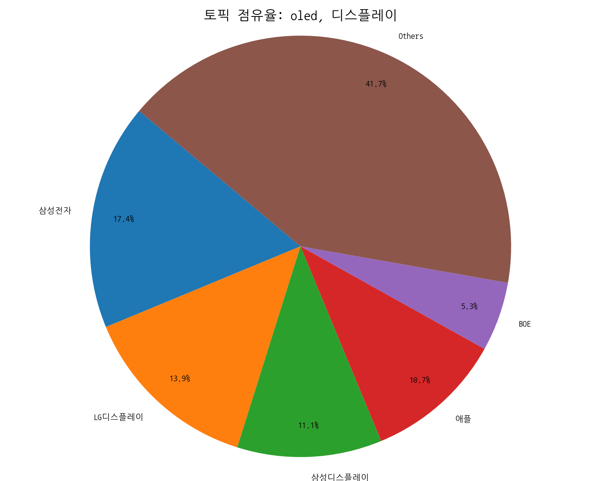 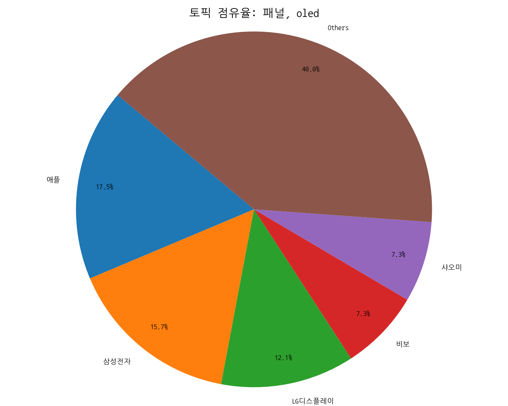
시장을 주도하는 주요 기업들이 어떤 토픽에 집중하고 있는지 보여줍니다.
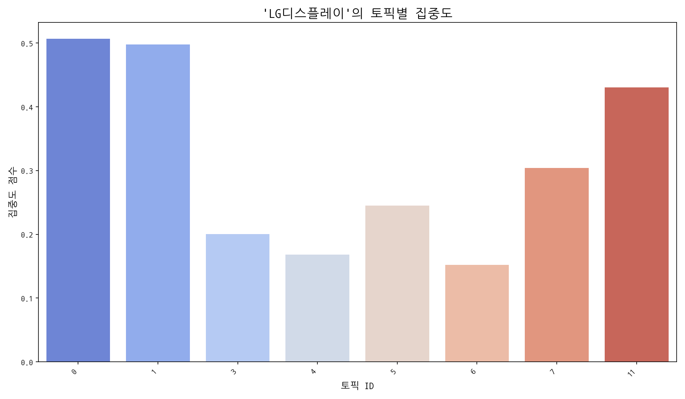 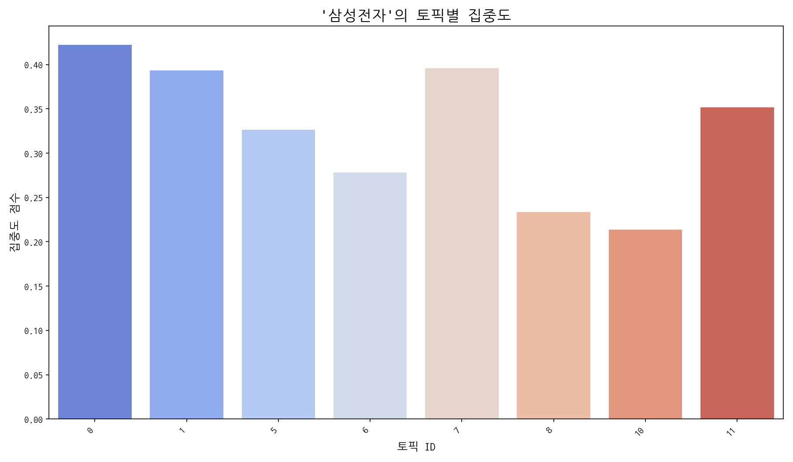 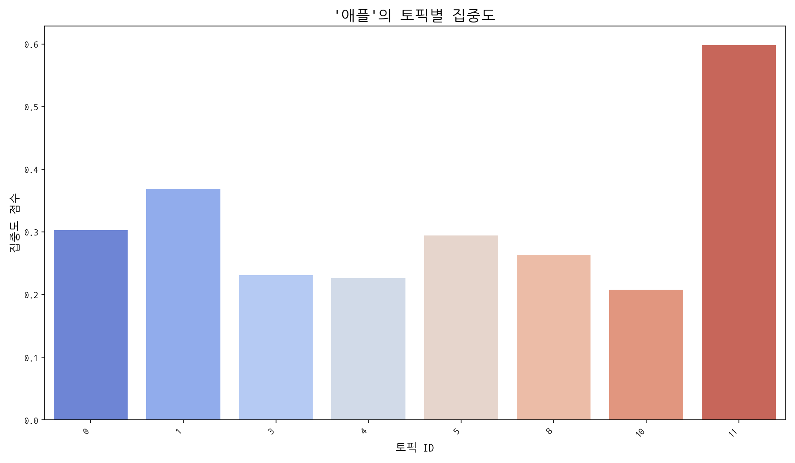
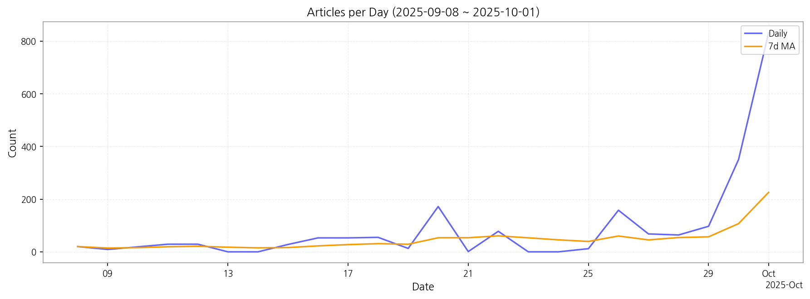
1. 핵심 맥락:
2. 최근 변화/스파이크:
3. 실무 인사이트:
| Idea | Target | Value Prop | Score |
|---|---|---|---|
| 초고해상도 마이크로 OLED 기반 AR 글래스용 디스플레이 모듈 | 북미 빅테크 기업, AR/VR 기기 제조사 | 기존 디스플레이 대비 압도적인 해상도와 명암비, 저전력 특성을 제공하여 AR 글래스의 몰입감과 휴대성을 극대화. 경쟁사 대비 빠른 양산 능력 및 가격 경쟁력 확보. | 4.50 |
| AI 기반 디스플레이 공정 자동화 및 수율 개선 솔루션 | 디스플레이 패널 제조사 | AI 기반 공정 분석 및 제어를 통해 수율 향상 및 생산 비용 절감. 공정 자동화 및 지능화를 통해 생산 효율성 극대화 및 경쟁력 강화. | 4.30 |
| AI 기반 차량용 HUD 증강 현실 솔루션 | 글로벌 완성차 OEM, 자율주행 솔루션 개발 기업 | AI 기반 실시간 객체 인식 및 예측을 통해 운전자에게 최적화된 증강 현실 정보를 제공하여 안전 운전 지원. 기존 HUD의 정보 과잉 문제 해결 및 차별화된 사용자 경험 제공. | 4.20 |
| 차세대 디스플레이용 신소재 개발 및 공급 | 디스플레이 패널 제조사, 소재 기업 | 차세대 디스플레이의 성능 향상 및 원가 절감에 기여하는 혁신적인 소재 제공. 디스플레이 소재 시장의 기술 리더십 확보 및 안정적인 수익 창출. | 4.00 |
| IT 기기용 벤더블 OLED 패널 솔루션 | 글로벌 스마트폰 제조사, 노트북 제조사 | 기존 OLED 대비 월등한 내구성과 유연성을 제공하여 다양한 폼팩터 디자인 구현 가능. 벤더블 디스플레이 시장 선점 및 기술 리더십 확보. | 3.80 |